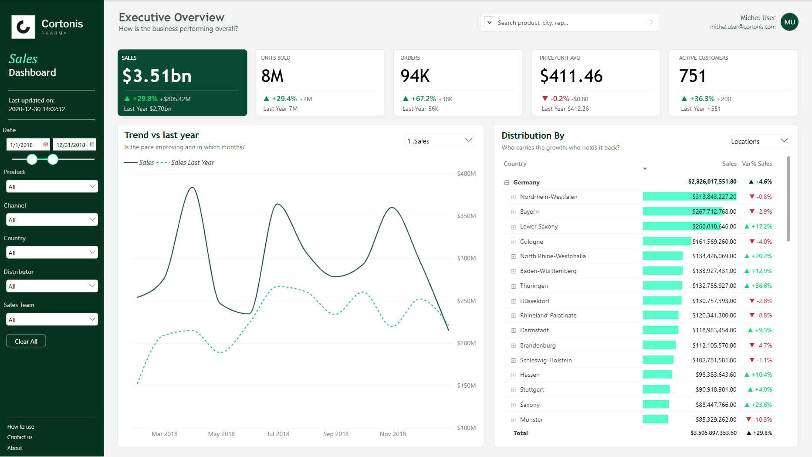

01
💊 Cortonis Pharma — Sales Performance Dashboard

A 5-page Power BI commercial performance dashboard built on a real pharmaceutical sales dataset (Foresight, Poland & Germany, 2017–2020, 254K transactions) — designed to give sales leadership and territory managers a clear, actionable view of what's happening in the field.
254K
TRANSACTIONS
5
PAGES
2
COUNTRIES
What makes it technically strong: dual field parameters on every page (metric × dimension), BCG quadrant scatter with dynamic median lines via MEDIANX, seasonality index with 95% CI via STDEVX.P, dual team/global ranking using ISINSCOPE, CALCULATETABLE and ALL().
View full project README →